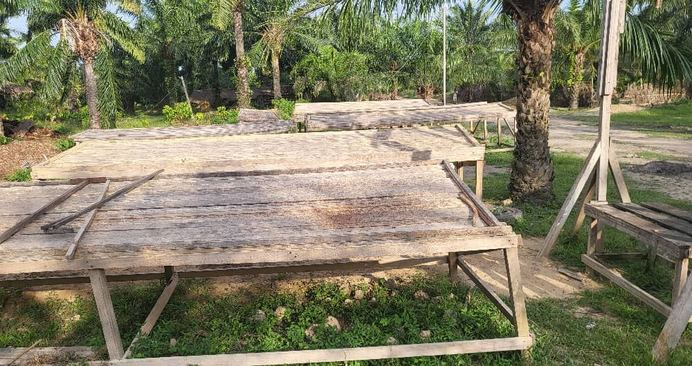

L'huile, le cacao
et le safou de la Likouala.
Sept cultures sur une même terre, à la confluence de l'Ibenga et de l'Oubangui. Récoltées, transformées et expédiées par l'exploitation qui les fait pousser depuis 2006.
Trois produits emblématiques,
quatre cultures de saison.
Chaque produit porte son origine, sa saison de récolte et son mode de transformation. Rien n'est acheté ailleurs pour être revendu.


Nous ne sommes pas un négociant. Nous sommes ceux qui plantent, ceux qui récoltent, et ceux qui pressent.
Ce que vous recevez a poussé ici, entre deux rivières, et n'a quitté Ibenga qu'une fois prêt à voyager.
De l'arbre au bidon,
tout se fait ici.
Trois étapes, un seul lieu. Ce que l'exploitation affirme sur sa transformation reste à documenter avec elle, photo par photo.

La récolte
Les régimes de noix de palme, les cabosses et les safous sont cueillis à maturité, sur le domaine.

La transformation
Pressage de l'huile, fermentation et séchage du cacao, extraction du miel. Sur place, avant que la récolte ne s'abîme.

Le départ
Par la rivière ou par la route, vers Brazzaville, Pointe-Noire et l'export. Volumes et délais annoncés à l'avance.
Une terre entre deux rivières.
Le domaine est installé au village d'Ibenga, dans le district d'Enyellé, là où l'Ibenga rejoint l'Oubangui. Une terre alluviale, une forêt qui protège les cultures.
Depuis 2006, l'exploitation cultive, transforme sur place, et fait vivre les familles du village qui y travaillent.

Acheter, transformer,
distribuer.
L'exploitation fournit en direct, sans intermédiaire, avec des volumes et des délais annoncés à l'avance. Chaque relation commence par un besoin clairement exprimé.
- Distributeurs et revendeursDétail et gros
- Transformateurs agroalimentairesMatière première
- Restauration et hôtellerieApprovisionnement
- Partenaires et investisseursSur dossier
Exprimez votre besoin
Produit, usage, volume, pays : quatre réponses suffisent pour que l'exploitation vous fasse une proposition.
Envoyer mon besoinLe formulaire sera activé prochainement. En attendant, appelez le +242 05 536 16 05 ou écrivez-nous depuis la page Contact.
Venir à Ibenga, voir de ses yeux.
L'exploitation reçoit des visiteurs, des étudiants et des porteurs de projet. On marche dans la plantation, on assiste au pressage, on goûte. L'accès et les séjours sont décrits page Visiter.